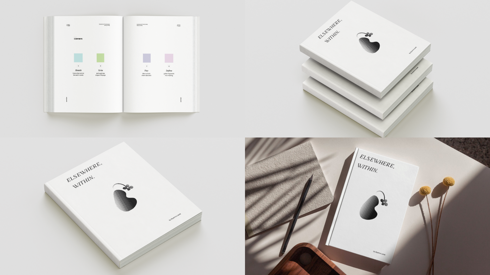
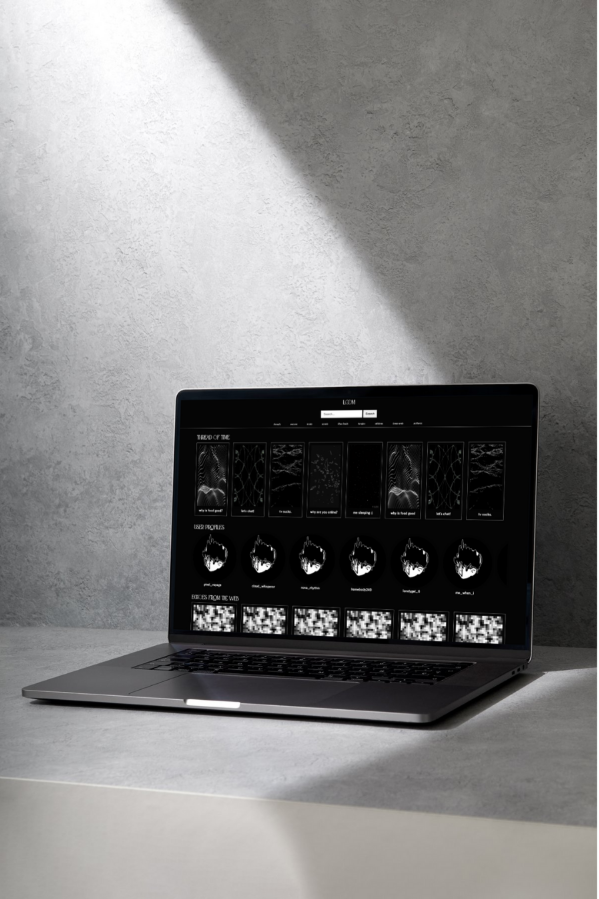
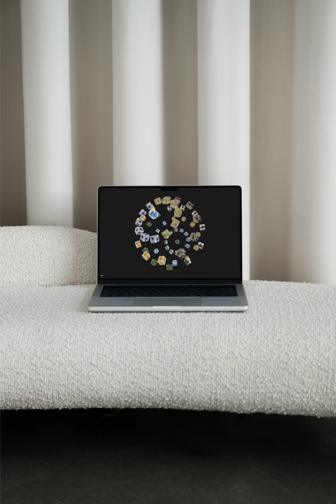
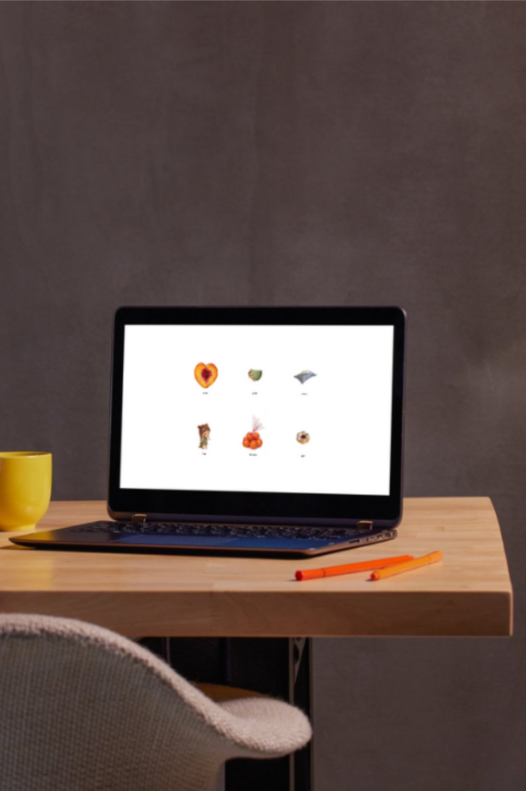
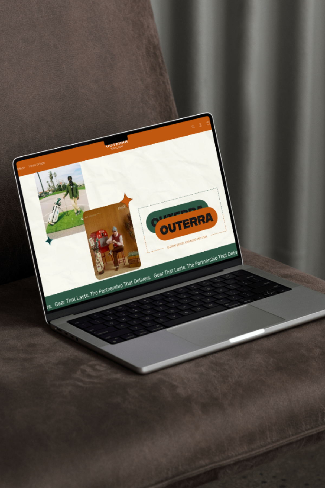
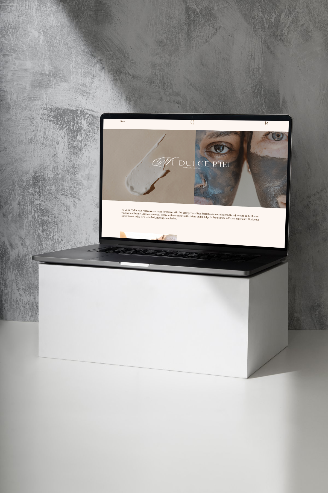

about
work
index
aiyanna lopez
Olympia USA
E-Commerce Web Design • 2025
Elsehwere, Within.
Narrative + Graphic Design • 2025

LOOM
Creative Code • 2023

Birds Etc.
Creative Code • 2024

matchayan
Creative Code • 2024

Outerra
Branding + Web Design • 2025

Mi Dulce P’jel
E-Commerce Web Design • 2025

Granos
Independent Short Film • 2024
close